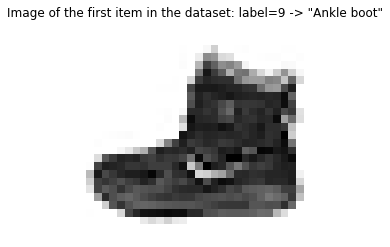

In this series, I want to discuss the creation of a small library for training neural networks: nntrain. It’s based off the excellent part 2 of Practical Deep Learning for Coders by Jeremy Howard, in which from lessons 13 to 18 (roughly) the development of the miniai library is discussed.
The library will build upon PyTorch. However, we’ll create things as much as possible from scratch to understand how it all works. Once the main functionality of components are implemented and verified, we can use PyTorch’s version, mainly for performance reasons and interoperability. This is similar to how things are done in the course. I explicitly want to state here that it’s not just a “copy / paste” of the course. On many occasions I take a different route, and most of the code is my own.
As we’ll see, the library will be built using nb_dev, another great project from the fastai community. With this software, it becomes very straight forward to create python libraries which are exported from jupyter notebooks. This may sound a bit weird, but it has the advantage that we can create the sourcecode for our library in the very same environment in which we want to experiment and interact with our methods, objects and structure while we are building the library. For more details on why this is a good idea, see here.
So without further ado, let’s start with some data!
Data
To keep things simple, let’s use the fashion-mnist dataset. We can get the data from the huggingface datasets library:
from datasets import load_dataset,load_dataset_buildername ="fashion_mnist"ds_builder = load_dataset_builder(name)print(ds_builder.info.description)
Fashion-MNIST is a dataset of Zalando's article images—consisting of a training set of
60,000 examples and a test set of 10,000 examples. Each example is a 28x28 grayscale image,
associated with a label from 10 classes. We intend Fashion-MNIST to serve as a direct drop-in
replacement for the original MNIST dataset for benchmarking machine learning algorithms.
It shares the same image size and structure of training and testing splits.
ds is a Dataset object. These kind of objects appear in many Deep Learning libraries and have two main functionalities: you can index into them and they have a length:
Hugginface datasets (as opposed to PyTorch datasets) also have some properties, in this case num_rows, which is the length of the dataset (60000) and features, a dictionary giving metadata on what is returned when we index into the dataset:
import matplotlib.pyplot as pltimage = ds[0]['image']label = ds[0]['label']figure, axs = plt.subplots()axs.imshow(ds[0]['image'], cmap='Greys')axs.set_title(f'Image of the first item in the dataset: label={label} -> "{ds.features["label"].int2str(label)}"');axs.axis('off');

Since we want to start simple, and only later get to Datsets and Dataloaders: let’s pull out the data into a tensor so we can build simple linear layers.
import torchvision.transforms.functional as TF # to transform from PIL to tensorimport torchx_train = [TF.to_tensor(i).view(-1) for i in ds['image']]y_train = [torch.tensor(i) for i in ds['label']]len(x_train), len(y_train), len(x_train[0])
(60000, 60000, 784)
So x_train and y_train are both lists of length 60000, and an element in x_train has length 784 (28x28 pixels).
Linear layers
Now that we have the data, let’s create our very first network operation: a linear layer which takes the 784 long flattened out image vector, and maps it to an output vector of length 10
import torchdef lin(x, a, b):return x@a + ba = torch.randn(784, 10)b = torch.randn(10)out = lin(x_train[0], a, b)out.shape
torch.Size([10])
Note
For details on matrix multiplications, check out this post I wrote earlier.
Let’s do the same for all our training data at once:
Nice, that’s basically a forward pass through our model on all our training data!
Now if we want to increase the depth of our network by adding an additional layer, we need to add a non-linearity in the middle. Why? See for example the first paragraphs of this answer.
Let’s add a ReLu nonlinearity:
def relu(x):return x.clamp_min(0.0)
And let’s combine these into our first “model”, consisting of two linear layers and a relu nonlinearity in the middle:
n_in =784# number of input units (28x28)n_h =50# number of hidden unitsn_out =10# number of output unitsw1 = torch.randn(n_in, n_h)b1 = torch.zeros(n_h)w2 = torch.randn(n_h, n_out)b2 = torch.zeros(n_out)def model(x): a1 = lin(x, w1, b1) z1 = relu(a1)return lin(z1, w2, b2)
out = model(x_train)
out.shape
torch.Size([60000, 10])
Our “model” currently only does a forward pass through the network. And as a matter of fact, it’s doing a forward pass with random weights. When training a neural network, we want to change these parameters in a way that the outputs of the network align with the outputs (y_train). I will not go into the details of this, but here is a great video by Andrej Karpathy which in my opinion gives one of the best explanations into how this works.
Before doing a backward pass, we first have to calculate the loss. Since the outputs represent any of the 10 classes the image corresponds with, cross entropy is a straight forward loss function. Some details about cross entropy loss can be found in a post I wrote earlier. However, since we want to add the backpropagation ourselves and I don’t know how to backpropagate through cross entropy (and I don’t feel like spending a lot of time on it), let’s use a much easier loss function for now: mean squared error (MSE). This obviously doesn’t make any sense in the context of our data, but mathematically it’s possible. We just have to end up with a single activation of our model instead of 10:
n_out =1# number of output units changed to 1w2 = torch.randn(n_h, n_out)b2 = torch.zeros(n_out)def model(x): a1 = lin(x, w1, b1) z1 = relu(a1)return lin(z1, w2, b2)out = model(x_train)
out.shape
torch.Size([60000, 1])
From which we see that the outputs have an empty trailing dimension. y_train doesn’t have this, so we have to squeeze out this empty dimension when computing the MSE:
The next step will be to add the backward pass. But let’s refactor our code to put things into classes, that way the backward pass can be added more easily:
class Linear():def__init__(self, n_in, n_out):self.w = torch.randn(n_in, n_out)self.b = torch.zeros(n_out)def__call__(self, x):self.inp = x # storing this for the backward passself.out = x@self.w +self.b # storing this for the backward passreturnself.outclass Relu():def__call__(self, x):self.inp = x # storing this for the backward passself.out = x.clamp_min(0.) # storing this for the backward passreturnself.outclass MSE():def__call__(self, pred, targ):self.pred = pred # storing this for the backward passself.targ = targ # storing this for the backward passself.out = (pred.squeeze(-1)-targ).pow(2).mean()returnself.outclass Model():def__init__(self, n_in, n_h, n_out):self.layers = [Linear(n_in, n_h), Relu(), Linear(n_h, n_out)]self.loss = MSE()def__call__(self, x, y):for l inself.layers: x = l(x)returnself.loss(x, y)
x_train.shape
torch.Size([60000, 784])
m = Model(n_in, n_h, n_out)l = m(x_train, y_train)
To add in the functionality for the backward pass, redefining the whole class is a nuisance. So instead we’ll patch the classes. We can do this very easily by using the fastcore library. Let’s see a small example:
So with fc.patch we can extend or change the behavior of Classes that have been defined elsewhere, even on instances of the objects that are already created. Nice!
m = Model(n_in, n_h, n_out)l = m(x_train, y_train)m.backward()
Now the actual operations in the backward methods you will just have to take for granted as I am not going to derive them. If you want, you can have some fun (?) to try and derive it yourself. What I think is most important about these formulas:
Notice that each layer has a reference to it’s inputs and it’s outputs
During the backward pass, each layer uses the gradient from the outputs and uses it to set the gradient on the inputs
The inputs from layer \(n\) are the outputs from layer \(n-1\), so when the gradients are being set on the inputs from layer \(n\), this means that layer \(n-1\) it’s outputs are being set at the same time
This is the fundamental point about backpropagation of the gradient: in reverse order, layer by layer the gradients are being propagated back through the network using the chain rule
Although we don’t derive the operations, we can see that that there exist operations that do this. These operations are not magical, they are just the result of calculus: not very different from the fact that if \(f(x) = x^2\) then \(f'(x) = 2x\) and if \(h(x) = f(g(x))\) then \(h'(x) = f'(g(x)) * g'(x)\)
First refactor: Module baseclass and training loop
Now let’s see how we can make this a little better. One thing that seems a bit silly is that in each of the Linear, MSE and Relu classes, we are storing explicitly the inputs and outputs when doing a forward call. As mentioned, we need this to backpropagate the gradients. However, we rather not store that explicitly all the time when creating a new layer.
So let’s create a base class that takes care of this:
Pack the forward functionality of each layer in a dedicated forward method
let the storing of inputs and ouputs be done in the __call__ method of the baseclass, and call the self.forward method in between.
This works, but there is one caveat: most layers just have one input when they are called (x), but the loss has 2 (pred and targ). To make this storing of the inputs generic we can store them as an array on the base class, and also pass them as positional arguments to _backward. This way, forward and _backward have the same arguments.
With these objects, let’s create our first training loop:
epochs =5# train for nr of epochsbs =1024# batch-sizelr =0.01# learning ratem = Model(n_in, n_h, n_out) # instantiate our modelfor epoch inrange(epochs): # iterate through epochsfor i inrange(0,len(x_train), bs): # iterate through the batches xb = x_train[i:i+bs] # get minibatch yb = y_train[i:i+bs] loss = m(xb, yb) # forward pass m.backward() # backward passfor l in m.layers: # iterate through the layersifisinstance(l, Linear): # only update the linear layers l.w +=- lr * l.w.g # update the weights l.b +=- lr * l.b.g # update the bias l.w.g =None# reset the gradients l.b.g =Noneprint(f'{epoch=} | {loss=:.1f}')
Awesome, the loss is decreasing i.e. the model is training!
Second refactor: simplify the weight update
Let’s try to simplify our training loop, and make it more generic. By adding functionality to our Module class so that it has a reference to it’s trainable parameters, we can update the weights as shown below.
def fit(epochs):for epoch inrange(epochs):for i inrange(0,len(x_train), bs): xb = x_train[i:i+bs] yb = y_train[i:i+bs] loss = m(xb, yb) m.backward()for p in m.parameters(): # model has a reference to the trainable parameters p -= lr * p.g m.zero_grad() # model can reset the gradientsprint(f'{epoch=} | {loss=:.1f}')
To do so, we will create a new baseclass (NNModule), from which our model and all the layers will inherit. We have the following conditions and properties:
The class will hold a dictionary _named_args, in which all the named arguments are stored that are set on the Module.
This is done by defining a __setattr__ method, which stores any named argument that doesn’t start with an _ in this dictionary
For the Linear, these named arguments will be the parameters w and b
For the Model, these named arguments will be layers (an array containing the layer objects) and loss containing the MSE object.
Because we want to get the parameters directly out of a layer, as well as out of the model, we need to implement some logic in _parameters() to iterate through the lowest “level” and get the actual parameters out
Last but not least we have to implement a zero_grad() method to zero the gradients on the parameters
class NNModule:def__init__(self):self._named_args = {} # [1]def__setattr__(self, name, value): # [2]ifnot name.startswith("_"): self._named_args[name] = valuesuper().__setattr__(name, value)def _parameters(self, obj): # [5]for i in obj:ifisinstance(i, torch.Tensor): yield iifisinstance(i, NNModule):yieldfromiter(self._parameters(i._named_args.values()))ifisinstance(i, list):yieldfromiter(self._parameters(i))def parameters(self):returnlist(self._parameters(self._named_args.values()))def zero_grad(self):for p inself.parameters(): p.g =None# [6]def__call__(self, *args):self._args = args # NOT stored under _named_args as \self._out =self.forward(*args) # it starts with "_"returnself._outdef backward(self): self._backward(*self._args)
Finally we are in a position to use PyTorch’s nn.Module, since we understand all of it’s behavior! We can simplify:
import torch.nn as nnclass Model(nn.Module):def__init__(self, n_in, n_h, n_out):super().__init__()self.layers = [nn.Linear(n_in, n_h), nn.ReLU(), nn.Linear(n_h, n_out)]for i,l inenumerate(self.layers): # ^ we use the nn.Linear and nn.ReLU from PyTorchself.add_module(f'layer_{i}', l) # we need to register the modules explicitlyself.loss = nn.MSELoss() # we use the MSELoss from PyTorchdef forward(self, x, y):for l inself.layers: x = l(x)returnself.loss(x.squeeze(-1), y)
# Autograd needs all tensors to be floatx_train = x_train.to(torch.float32)y_train = y_train.to(torch.float32)m = Model(n_in, n_h, n_out)
def fit(epochs):for epoch inrange(epochs):for i inrange(0,len(x_train), bs): xb = x_train[i:i+bs] yb = y_train[i:i+bs] loss = m(xb, yb) loss.backward()with torch.no_grad():for p in m.parameters(): p -= lr * p.grad m.zero_grad()print(f'{epoch=} | {loss=:.1f}')
Fourth refactor: nn.ModuleList and nn.Sequential
To simplify the storing of the layers array and the registration of the modules, we can use nn.ModuleList. Let’s also take out the loss out of the model itself, and put that in the fit function:
class Model(nn.Module):def__init__(self, n_in, n_h, n_out):super().__init__()self.layers = nn.ModuleList([nn.Linear(n_in, n_h), nn.ReLU(), nn.Linear(n_h, n_out)])def forward(self, x, y):for l inself.layers: x = l(x)return x
This turns out to be such an elementary operation, that PyTorch has a module for it: nn.Sequential.
We can further refactor the model by adding an Optimizer, this is an object that will have access to the parameters and does the updating of the weights (step) and zeroing the gradient. Most notably, we want to go from:
...with torch.no_grad():for p in model.parameters(): p -= lr * p.grad model.zero_grad()...
So we introduce the Optimizer, which has exactly these two methods:
class Optimizer():def__init__(self, params, lr=0.5):self.params =list(params)self.lr = lrdef step(self):with torch.no_grad():for p inself.params: p -=self.lr * p.graddef zero_grad(self):with torch.no_grad():for p inself.params: p.grad.zero_()
We have come a long way, and covered a lot of ground. We have seen many of the fundamental components of training a neural network: the data, a simple model, training loops and optimizers. We have seen why things like nn.Module exist, and understand it’s behavior. Furthermore, we have seen that the need for nn.Module and torch.optim comes out of the need for simplifying things in the training loop.
In the next post, we will get to datasets and dataloaders, and we will start adding our first things into the nntrain library 🕺.